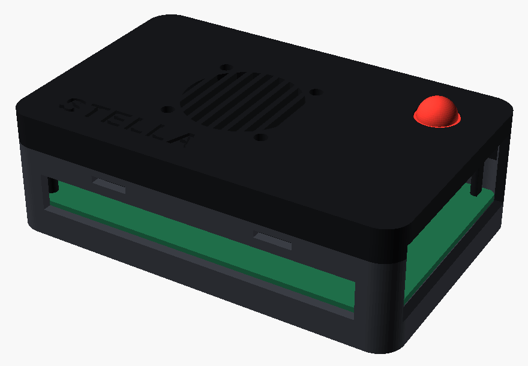
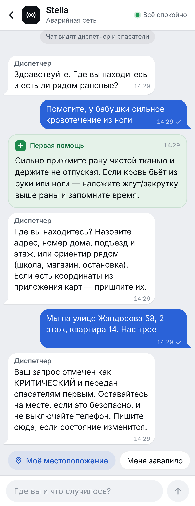
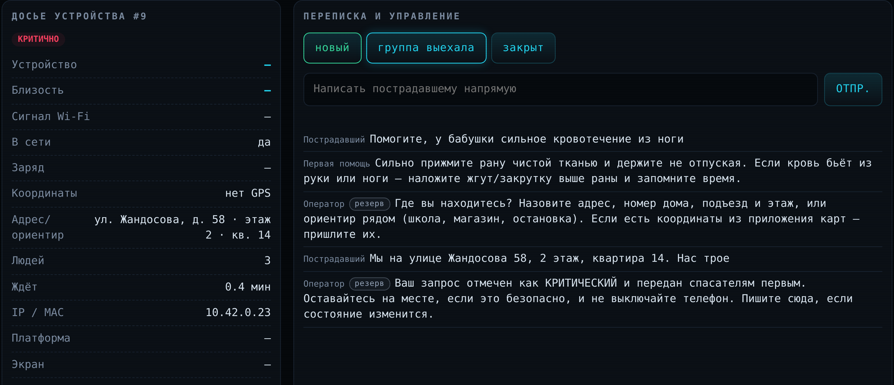

Модель корпуса коробки. Здесь будет фото настоящей коробки, если пришлете его.
Автономный узел связи с искусственным интеллектом для помощи пострадавшим при чрезвычайных ситуациях
Подключается к открытому Wi-Fi SOS-STELLA-RESCUE. Чат открывается сам, приложение не нужно.
Плата Orange Pi 4 LTS раздает свою сеть и принимает сообщения без интернета и сотовой связи.
Находит в сообщении адрес, число людей и травмы, ставит приоритет и отвечает человеку.
Входит в консоль по PIN-коду и видит всех по срочности: досье с адресом и переписку.

Чат на телефоне пострадавшего

Консоль спасателя: досье с распознанным адресом, числом людей и приоритетом
Коробка сама проверяет, что сейчас доступно, и переключается без участия человека.
1. Наведите камеру: телефон подключится к Wi-Fi коробки, и откроется чат
2. Проверка узла для жюри: 10.42.0.1/verify